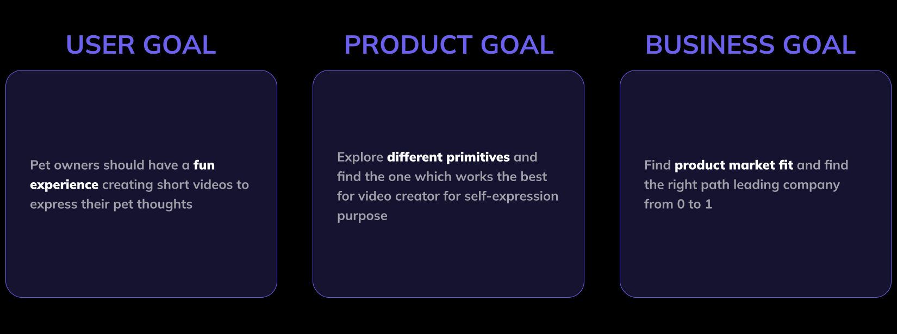
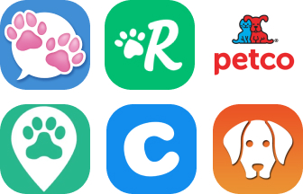

How to encourage pet owners to self-express their daily life through camera?
PetThoughts App Case Study | üìçProduct design at Youpi
What is PetThoughts?
PetThoughts app is a smart camera designed for pet owners. By using PetThoughts app, pet owners can use various AI lenses to capture their daily life with their furry friend, choose different editing tools like captions, watermarks, programmatic stickers, voiceover to add their thoughts into the video and use galaxy sendto page to share with family and friends. Different from the iOS system phone, it focuses on creativeness and self-expressiveness of the camera via AI technology.
The pet community
As we observed from tons of short-form videos online, pets are a hot topic that people like to express their life via camera and the pet community is growing fast especially since the Pandemic. However, there is no successful camera designed for this group yet. Our team would like to create a smart pet camera that pet owners can quickly capture the pet moment and share with anyone across different platforms.
The Problem
Nowadays short-form video is becoming a phenomenal product in personal entertainment. It provides people a richer way of expression than text and photos. However, after talking to some pet owners, we found that pet owners don't often record their life and express themselves via making videos. Thus a major problem that PetThoughts app tries to solve is:
"How to encourage pet owners to take videos and express their pet life?"
The major problem can be further broken down into different smaller questions:
1, From the creation flow perspective: how to make video creation process easy and fast?
2, From content creation perspective: what content can we encourage pet owners to create?
3, From the utility value perspective: how can we help pet owners easily save all videos in one place?
The Solution
Here are some solutions that PetThoughts app tries to tackle the problem:
1, From the creation flow perspective: simplify creation process.
2, From content creation perspective: add AI suggestions into creation process.
3, From the utility value perspective: provide a searchable timeline view of memories will help pet owners better organize all videos in one place.
The Goal
User Research
Interesting findings:
- popular pet related topics are pet entertainment, pet health, pet shopping, pet service etc.
- the percentage of pet owned in targeted market: 60% dogs, 30% cats, 10% others
- popular pet videos on Tiktok are about personifying pets, e.g. giving pets a voice, using captions to express a pet's mind, etc.
- A popular trend in TikTok is people are wondering what goes on inside their pet's head
- captions and text are powerful tools for people to express themselves
- pet social is a good start for social among people
- key members in the pet community: pet owners, breeders, shelter & volunteers, pet service providers etc.
Competitor Analysis
Pet Related App:
Pet app focuses on the following fields: (popularity from high to low)
- pet service
- pet shopping
- pet medical
- pet entertainment
- sound effect + translator
- breed scanner
- virtual pet
Camera App:
Most camera app focuses on the following fields:
- photo & video editing
- visual effect
- AR lens
- sound effect
- promotional video creating
Testing Product Ideas As Early As Possible
Being able to test product ideas among potential users at early stage of the design flow is very critical to startup like us who has limited engineer resources but tries to find the product market fit. How to get the users' feedback as early as possible, even without much engineer efforts, is the key to deciding the right product direction and feature selection. Due to the limited engineering bandwidth, the team would need to try different ways to get users' feedback before handing over the design to the eng team. Below are different ways our team is exploring to get users' opinions.
Design
Simplified Creation Flow
When designing the camera creation flow, I have been spending a lot of time on simplifying the whole process. After rounds of iterations, the whole process has been reduced from 5 steps to 4 steps and become smoother and one-hand friendly.
Following changes have been made:
- Introduce camera's 'Instant Mode' by allowing users to long press the camera button to speed up the process;
- Move down 'Next' button in Editing Page and Sendto Page to create an one-hand-friendly experience;
- Change 'camera' icon to 'Done' button to reduce confusion at this step.

AI Assisted Video Creation
Suggested AI in creation flow
Suggested popular memes: PetThoughts app is leveraging Youpi's AI technology and provides suggested popular pet memes for video creation. It can help pet owners quickly get inspirations on what's going on inside their pet's mind (e.g. personify pet thoughts) and encourage them to create more content.
Activity Lens: Activity Lens is a pre-set video template with different combinations of camera & editing features. It helps pet owners quickly create trending videos without being video experts.
Pet Face Detection: This camera lens will detect a dog's or cat's face and pop up suggested captions to personify pet videos.
Prompt message to break cold start problem
When opening the camera, many people actually have no idea what they should do next. We observed some people just dropping out for this reason. By conducting competitor analysis, we think displaying the customized prompt message right after people open the camera page can help them quickly pass that cold-start stage and get to use the camera for video creation.

Pet customized font styles
We selected 40+ font styles customized for pet owners. One interesting need we observed from the pet owner creator is that they like to use customized fonts to express the different personality of their pet.

Camera is a keyboard: Just Tap for story-telling
TikTok & Snapchat camera is a canvas, which looks for artists to showcase the art. PetThoughts camera is a keyboard instead, which looks for people to type their stories. We are exploring the possibilities that anything on the screen can be a key for you to tap. The first step is to allow video creators to tap pixels to add captions and speech bubbles.

Interactive
What excited me about designing PetThoughts is the opportunity to design a new way of how we define video & camera. It is not a passive way to receive information, it can be a proactive way for people to express themselves and interact with others. After runs of user research and idea testing, we select interactive bubbles to be one way to capture the interactions between pet and pet owners.

Utility Value
Memories in Timeline
PetThoughts app is auto saving every video taken by video creators. We notice that there is a strong need for pet owners to save their pet videos in an organized way and easy to reuse. Timeline view memories and searchable tags will achieve this goal.
Galaxy Sendto Page
Galaxy sendto page provides a creative way to allow people to share videos anywhere with anyone.

Presentation Slides
Here are the presentation slides summarizing the process of designing and delivering PetThoughts app.
Design Exploration
Evaluation
Moderated user testings are conducted to evaluate the overall user experience at PetThoughts app and are conducted via Zoom or in personal interviews. There are tests conducted with 15 participants who are pet owners and age vary from 20 to 50. 14 participants are living in the United States and 1 is living in Australia. Here are some findings:
1, The task completion rate is 93%
2, 13/15 participants expressed the creation experience is pretty fun
3, Suggested captions are the No.1 feature that participants liked
4, There is a learning curve for people to learn how to tap to add speech bubbles during recording
Challenges
- Minimum viable product vs minimum loveable product
- Challenge on designing entertainment app
“People don’t know what they want until you show it to them.” -- Steve Jobs
- User testing challenge
figma is not effective for testing camera & video product;
many user testing website doesn’t support using camera during screen recording
- Adopt early beta users challenge
- Eng bandwidth & limitation
What I learned
* Good product is coming from rounds of iterations
* Change assumption from “people will use our product” to “people won’t use our product”
* Stay humble, keep learning
* As a designer, crush the ego and don’t take the feedback personal
* User research is not enough